Setelah sebelumnya mempelajari widget dasar seperti Text, Container, Row, dan Column, praktikum kali ini masuk ke bagian yang lebih interaktif, yaitu form inputan. Pada dunia aplikasi mobile, hampir semua aplikasi memiliki form, entah itu form login, form pencarian, atau form pendaftaran. Karena itu penting untuk memahami cara Flutter menangani inputan dari keyboard, mulai dari widget paling sederhana (TextField) sampai widget yang sudah bisa melakukan validasi otomatis (TextFormField).
Perbedaan mendasar antara TextField dan TextFormField terletak pada validasi. TextField
hanya menangkap teks yang diketik pengguna, sedangkan TextFormField sudah terhubung dengan
sistem Form dan dapat diberi aturan validasi lewat parameter validator.
Supaya validasi dari beberapa TextFormField bisa dicek sekaligus, dibutuhkan
GlobalKey<FormState> yang dipasang ke widget Form, lalu dipanggil lewat
_formKey.currentState!.validate() saat tombol submit ditekan.
Setelah menyelesaikan praktikum ini, mahasiswa diharapkan mampu:
Langkah pertama, dibuat file baru bernama form_textfield.dart
di dalam folder lib. File ini berisi satu StatefulWidget bernama
MyForm yang memiliki satu TextField untuk input nama dan satu
ElevatedButton untuk menampilkan hasil inputan lewat SnackBar.
Karena project sudah memiliki beberapa file dart, menjalankan file ini tidak bisa langsung menekan Run biasa, melainkan harus menentukan target file secara spesifik lewat terminal dengan perintah berikut, supaya Flutter tahu file mana yang dijalankan sebagai entry point.
Hasilnya:
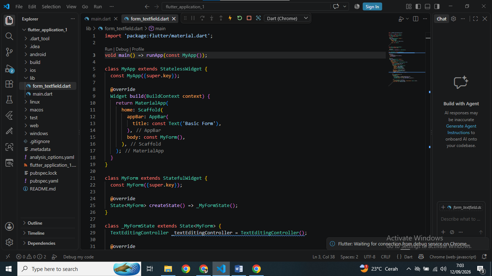
Setelah aplikasi terbuka di Chrome, kolom Nama Lengkap diisi dan tombol "Tampilkan nama" ditekan. Hasilnya, teks yang diketik langsung muncul di SnackBar pada bagian bawah layar, menandakan TextEditingController berhasil mengambil nilai inputan dengan benar.
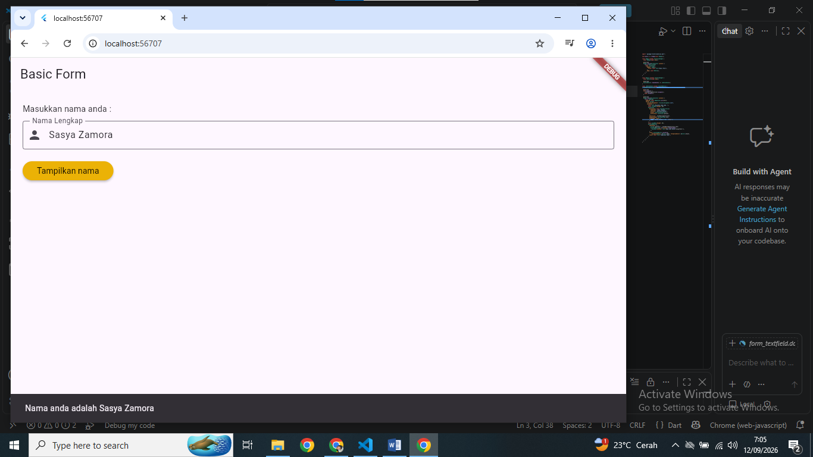
Selanjutnya dibuat file form_textformfield.dart. Bedanya dengan latihan
sebelumnya, form ini memiliki dua TextFormField (Nama dan Email) yang dibungkus widget
Form dan diberi validator masing-masing. Validator email juga mengecek apakah input
mengandung karakter @; jika tidak, maka dianggap tidak valid.
Hasilnya:
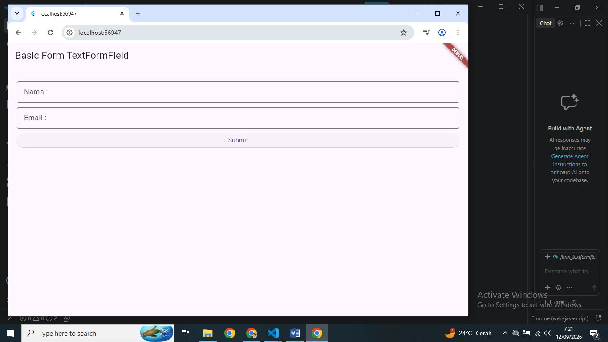
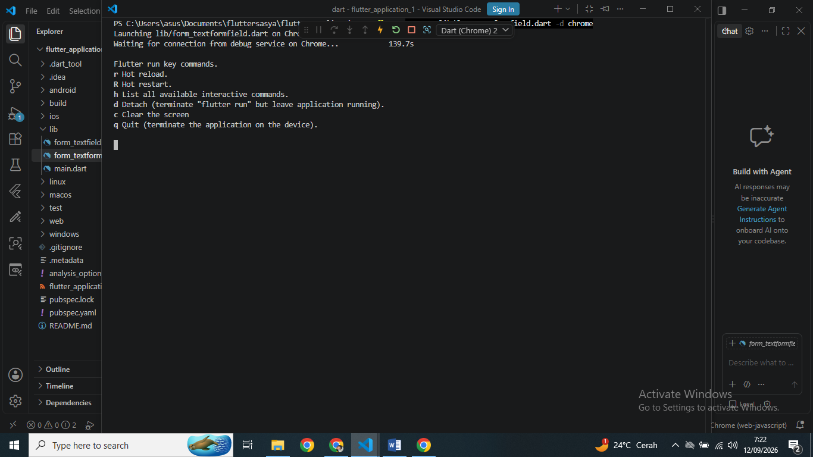
Kolom Nama dan Email kemudian diisi dengan data yang valid, lalu tombol Submit
ditekan. Karena validator tidak menemukan kesalahan (value tidak kosong dan email
mengandung '@'), method _formKey.currentState!.validate() mengembalikan
nilai true sehingga _submitForm() lanjut menampilkan SnackBar
berisi data yang berhasil divalidasi.
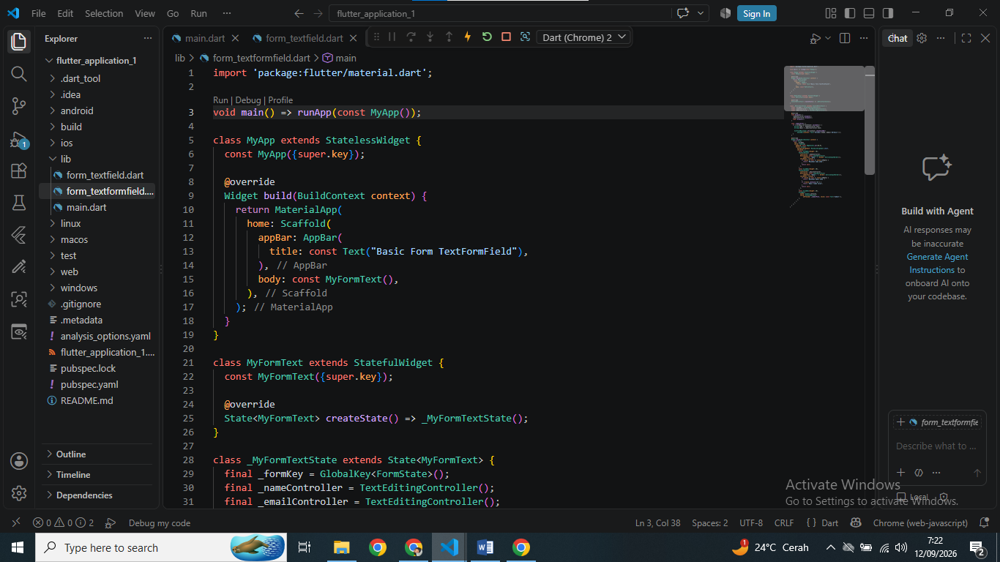
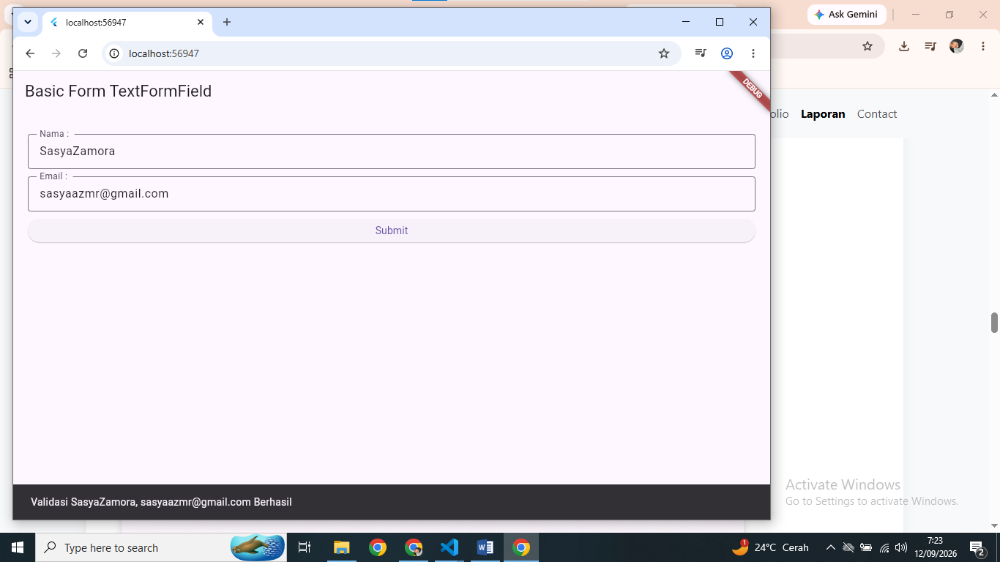
Tugas untuk Kelas B adalah membuat form registrasi dengan 4 input (Nama, Email,
Password, dan Confirm Password) yang dipisah menjadi dua file, yaitu
user_registration_form.dart untuk tampilan form dan
main_registration.dart sebagai entry point yang memanggil widget tersebut.
Pada user_registration_form.dart dibuat StatefulWidget
UserRegistrationForm dengan 4 buah TextEditingController dan validator
masing-masing: Nama tidak boleh kosong, Email harus mengandung '@', Password minimal
6 karakter, dan Confirm Password harus sama persis dengan Password yang diketik
sebelumnya.
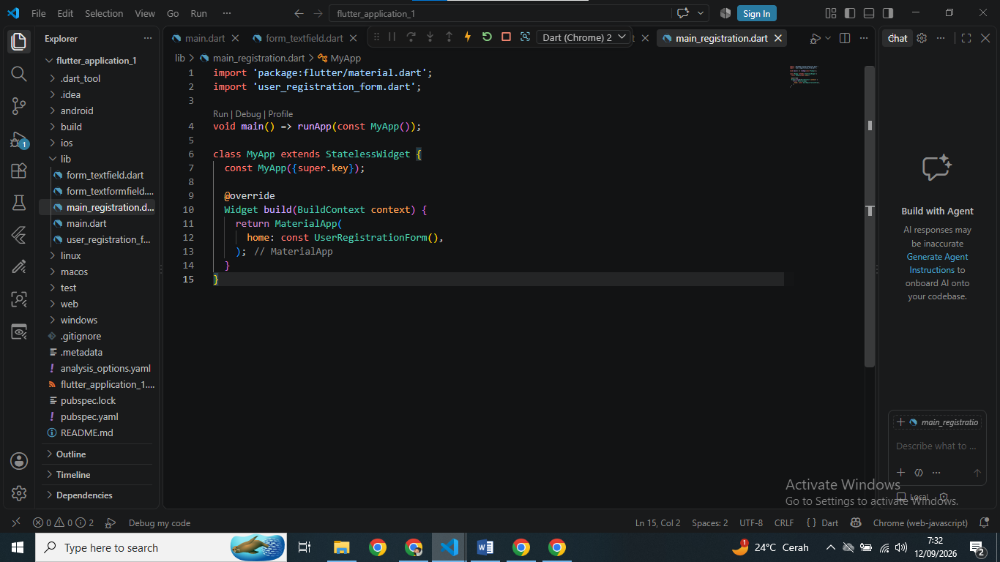
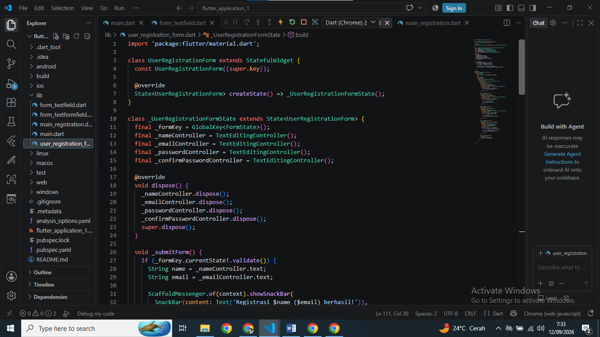
File dijalankan dengan perintah berikut:
Hasilnya:
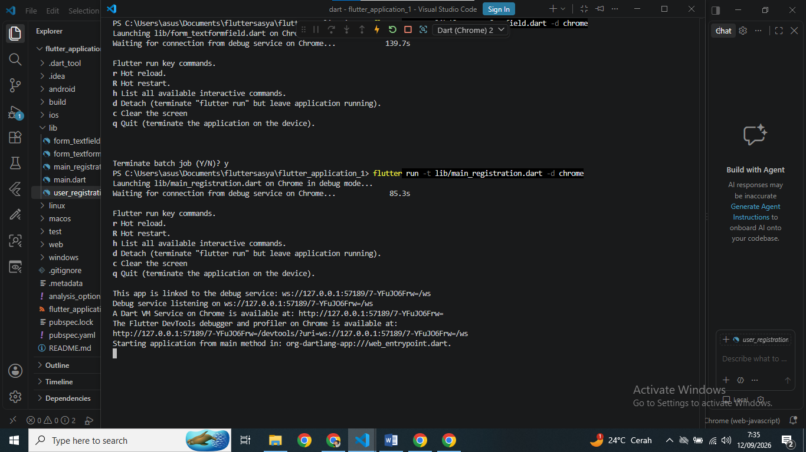
Tampilan awal form menunjukkan 4 kolom kosong yaitu Nama, Email, Password, dan Confirm Password, ditambah satu tombol Submit di bagian bawah.
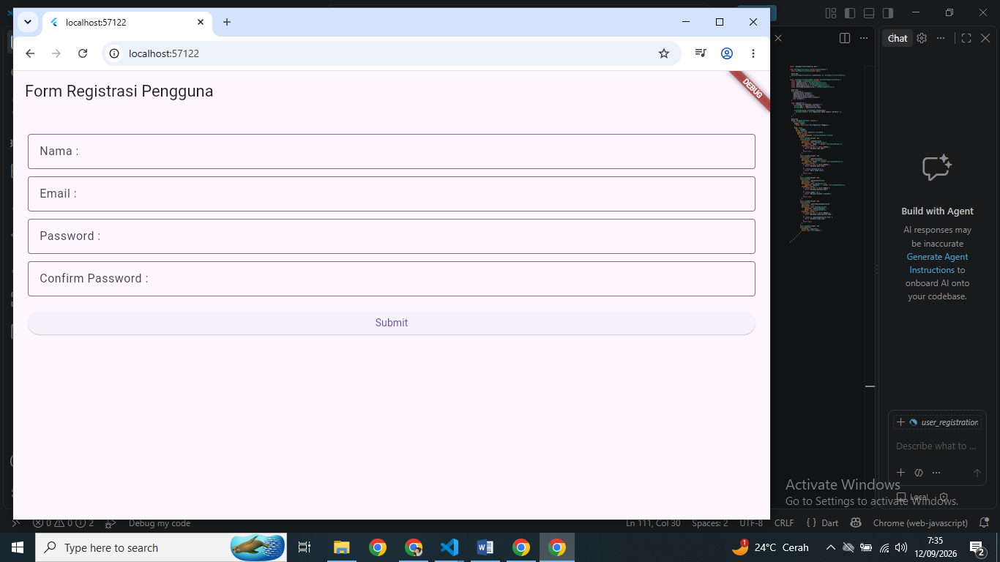
Setelah keempat kolom diisi dengan data yang sesuai aturan validasi (nama tidak
kosong, email mengandung '@', password minimal 6 karakter, dan confirm password sama
dengan password), tombol Submit ditekan. Karena seluruh validator mengembalikan nilai
null (artinya tidak ada error), _submitForm() berhasil
dijalankan dan menampilkan SnackBar konfirmasi registrasi berhasil.
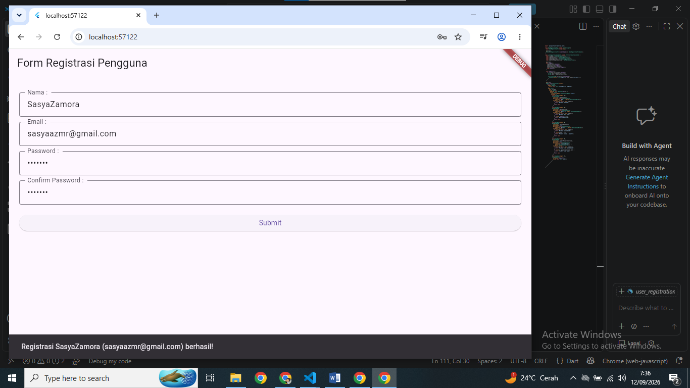
Dari praktikum ini dapat dilihat bahwa TextField dan TextFormField sebenarnya mirip,
tetapi berbeda kegunaan. TextField cukup untuk inputan yang sederhana dan tidak perlu
dicek, sedangkan TextFormField lebih tepat dipakai ketika inputan harus divalidasi
terlebih dahulu sebelum datanya diproses lebih jauh, seperti pada Latihan 2 dan tugas
Kelas B. Validasi sebanyak apa pun fieldnya menjadi lebih mudah ditangani berkat
GlobalKey<FormState> yang dipasang ke widget Form, karena cukup
memanggil _formKey.currentState!.validate() sekali saja untuk mengecek
semua field sekaligus, dibandingkan harus mengecek satu per satu secara manual yang
lebih rumit dan rawan salah.
Selain itu, TextEditingController juga menjadi bagian yang tidak kalah penting, karena
lewat controller ini nilai yang diketik pengguna bisa diambil, baik hanya untuk
ditampilkan langsung seperti pada Latihan 1 maupun untuk diolah dulu sebelum
ditampilkan seperti pada form registrasi Kelas B. Konsep validasi dua field pada
Latihan 2 juga dapat dikembangkan menjadi lebih kompleks, contohnya pada form registrasi
yang memiliki empat field sekaligus dengan validasi antarfield, yaitu password dan
confirm password yang harus sama persis. Satu hal lagi yang baru disadari selama
praktikum: karena dalam satu project terdapat banyak file dart untuk latihan yang
berbeda, menjalankan file tertentu tidak bisa asal klik Run, melainkan harus disebutkan
targetnya lewat perintah flutter run -t <nama_file> -d chrome supaya
Flutter tidak salah menjalankan main.dart bawaan project.